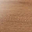
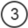

Создайте выразительный интерьер с цветными окнами REHAU
Ирландский дуб
Точная визуализация натурального дерева.
Яркие нестандартные цвета в тон или в дополнение интерьера.
Разные фактуры для Ваших пластиковых окон.
Подберите цвет для своих окон:

Больше 50 вариантов цветов и фактур спрашивайте у наших замерщиков
Зачем использовать ламинацию
Чтобы придать внешнему виду окна оригинальную выразительность, специалисты применяют ламинацию
- приём, при помощи которого можно декорировать своё жилье с учетом самых современных веяний
дизайнерского искусства.
Чтобы придать внешнему виду окна оригинальную выразительность, специалисты применяют ламинацию
- приём, при помощи которого можно декорировать своё жилье с учетом самых современных веяний
дизайнерского искусства.
Как окна становятся цветными?
Собственно, процесс ламинации профиля ПВХ состоит в процедуре нанесения на его поверхность декоративных
высокопрочных плёнок с приминением специального клея и ламинирующих установок.
Плёнку прочно соединяют с профилем. При этом внешней стороне пленки свойственна высокая стойкость к
повреждениям. В частности, цветное пластиковое окно, прошедшее процесс ламинации, стойко переносит
температурные колебания в диапазоне от -80°C до +130°C, оно исключительно стойко к солнечному излучению.

Пластиковые окна, прошедшие процесс ламинации профилей, имеют срок службы гораздо больший, чем не
ламинированные окна. В сравнении с окнами из массива дерева, они значительно дешевле.
Отзывы о цветных пластиковых окнах
посмотреть еще отзывыАлена,
Договор № 09.10.33512.13
Дата размещения: 13 декабря 2013 года
Поставили нам окна во всей квартире. Все очень понравилось)))компания на 5+. Все очень любезные, гибкая система скидок!!!буду советовать всем!!!!Сервис был на высоте,во-первых с поставкой получилось быстрее, во-вторых два раза приезжал замерщик Алексей, спасибо ему большое...